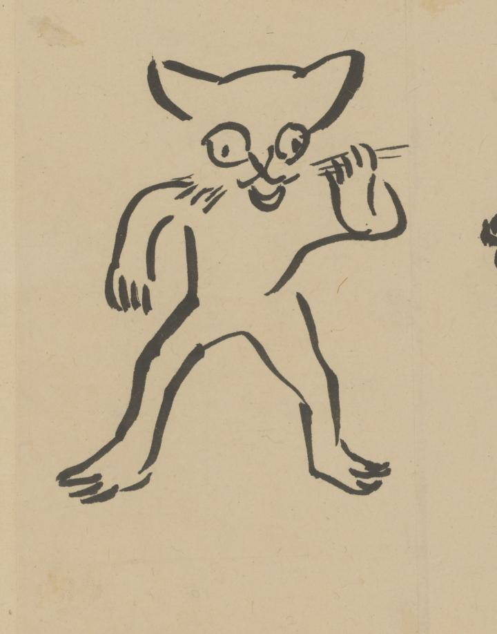

← 图鉴索引

猫の妖怪。左手でヒゲを触っている。
著作者：平福百穂／出典：親書誌：U426_nichibunken_0423：百鬼晝行圖；ヒャッキ チュウコウズ／日付：2015／資源識別子：U426_nichibunken_0423_0001_0041
Copyright (c)2010- International Research Center for Japanese Studies, Kyoto, Japan. All rights reserved.